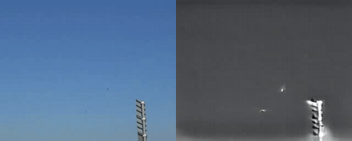
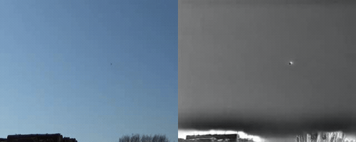
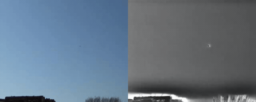
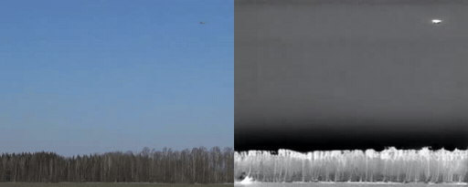
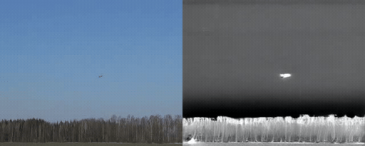
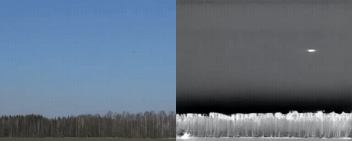

Seeing the
almost invisible.
A close look at tiny aerial targets through two imperfectly aligned sensors. AVID pairs visible and infrared observations of birds and drones—and measures how scale, displacement, and degradation change what we can see.
Two sensors.
One distant target.
Visible imaging preserves color and texture. Infrared emphasizes thermal contrast. Both recordings observe the same scene, though the cameras are not pixel-registered. This gallery presents paired animated RGB–IR excerpts generated directly from released footage, providing a lightweight way to inspect synchronized behavior without relying on browser video playback.


BIRD_03897 · RGB / IR GIF ↓Original paired bird excerpt from the released footage set.

BIRD_03998 · RGB / IR GIF ↓Additional bird sequence showing small target motion across both sensing channels.

BIRD_04099 · RGB / IR GIF ↓Bird sequence emphasizing appearance variation under weak alignment.

DRONE_082192 · RGB / IR GIF ↓Original paired drone excerpt from the released footage set.

DRONE_083193 · RGB / IR GIF ↓Additional drone sequence with matched RGB and thermal structure.

DRONE_085195 · RGB / IR GIF ↓Drone sequence illustrating the paired sensing conditions used in AVID.Each paired GIF is built directly from the uploaded RGB and infrared recordings, preserving timing and framing without synthetic registration, image blending, or scene reconstruction.
Five pixels
can be everything.
An offset between sensors means little without an object's size. The alignment burden curve measures how often the estimated shift exceeds a selected fraction of the median target side. Explore thresholds below using released data.
Object-relative alignment burden
ρ = measured pixel shift / target side · 264 annotation-matched samples
The global pixel-shift sample has 300 pairs; 264 could be joined to bounding-box annotations. Target-relative statistics use the latter subset.
72 of 264 annotated pairs
WHERE THE TARGETS LIVE
The ±12 px per-axis alignment search is bounded, so large true offsets may be censored.
When sensors
lose clarity.
AVID-C studies seven degradations at five intensity levels. These curves track Bhattacharyya class-error upper bounds in a fixed representation—not detector recognition accuracy. RGB and infrared need not respond identically.
Gaussian noise
Estimated bird–drone class overlap bound · lower indicates greater class separation
Different sensing channels respond differently to the same corruption.
Inspect the deterministic perturbation code ↗What do two
sensors add?
At the dominant 12–16 pixel scale, paired visible/infrared representations can show substantially lower estimated class overlap. The paired feature has 16 dimensions compared with 8 per individual modality; the paper separately examines dimension-matched controls.
At the selected shift: 84.4% of the initial fusion gap remains.
“The difficulty is not simply the target. It is the condition of the observation.”
Scale, sensor degradation, and cross-modal displacement change the evidence available to any recognition method. AVID measures those factors before collapsing them into an aggregate result.Read the research paper ↗From the frames
to the findings.
The public release provides frame-level RGB–IR pairs, inherited bird/drone bounding boxes, reproducible AVID-C perturbations, source scripts, and CSV exports behind the numerical results.
32,040 paired frames.
Get the paired Train and Validation images, annotations, and metadata.
Visit the dataset ↗02 / CODEComputational benchmark.
Regenerate the corruption families and intrinsic analyses from source.
Explore the code ↗03 / PROVENANCEEvery number has context.
Dataset, statistics, and the alignment sample reconciliation, documented.
Read the audit ↗Read the complete study.
AVID: A Weakly Aligned RGB–Infrared Dataset and Perturbation Benchmark for Tiny Aerial Targets
Dharini Raghavan · Vishnu Rao · Sethu Selvi S